Fourteen metres of scaffold, bridged between two houses.
Design submission for a working platform spanning a live alley, drawn for check by a temporary works designer.
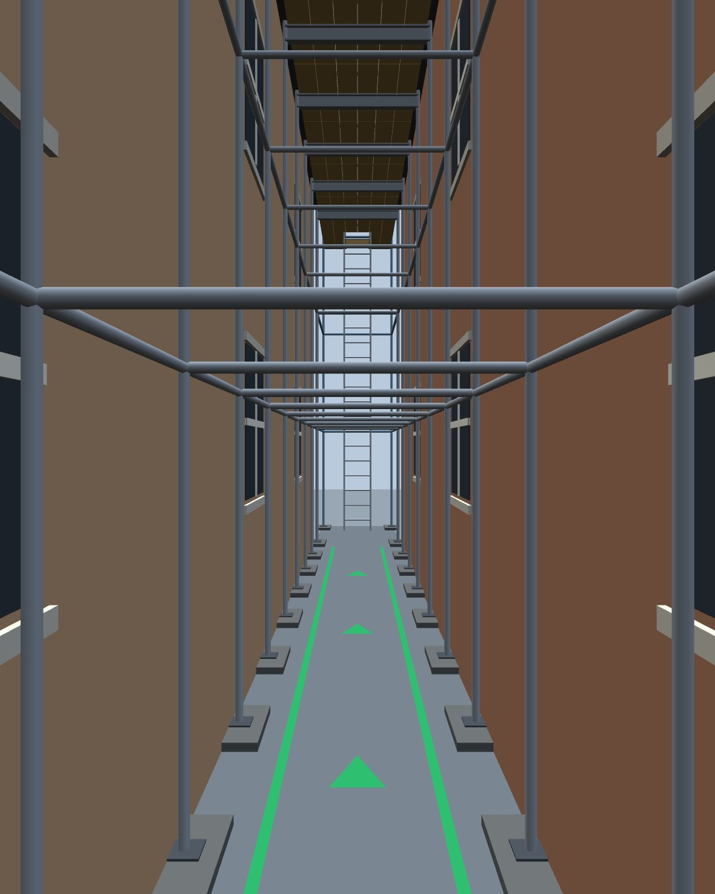
Every sheet in the pack
Ten A3 sheets, merged into one PDF you can forward. Tap any sheet to open the pack. Print at A3, 100 per cent, do not scale.
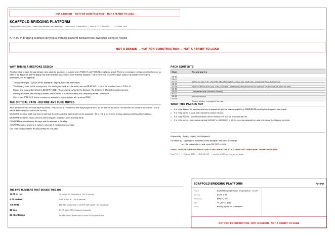
SC-00Cover, index and critical path1 page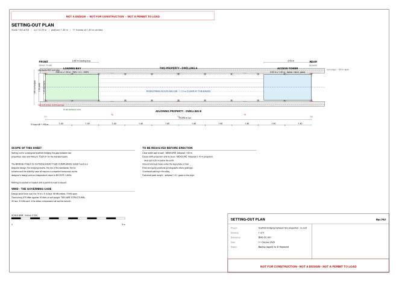
SC-01Setting-out plan, 1:50Frames, ties, loading bay, route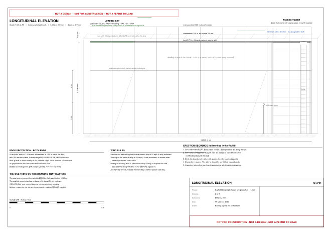
SC-02Longitudinal elevation, 1:50Three lifts, access tower, hi-ab bay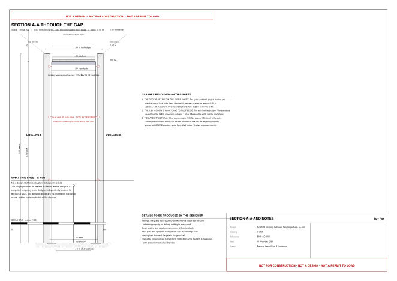
SC-03Section through the gap, 1:30What fits between the walls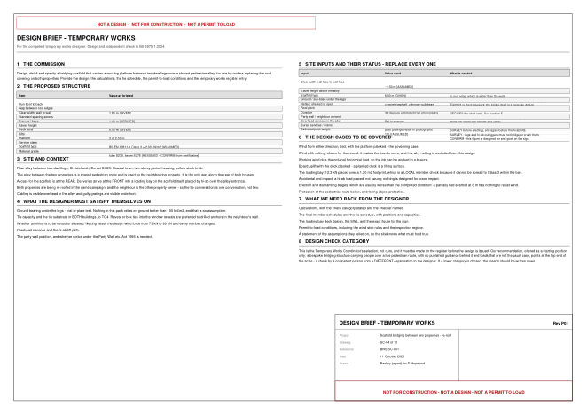
SC-04Design brief for the designer11 site inputs and their status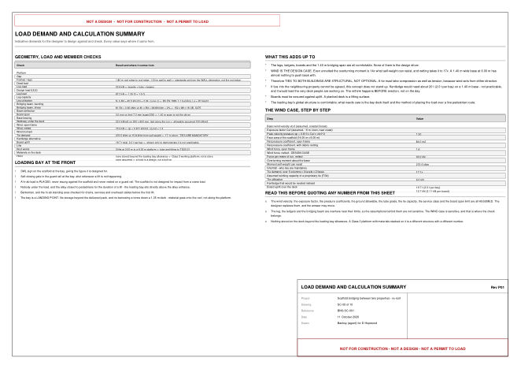
SC-05Load demand and calculationsEvery figure with its source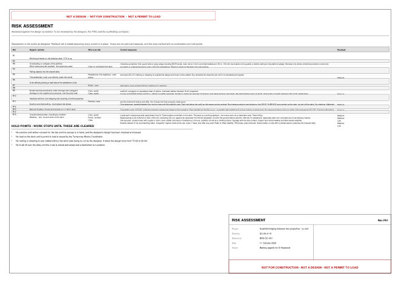
SC-06Risk assessment15 hazards, hold points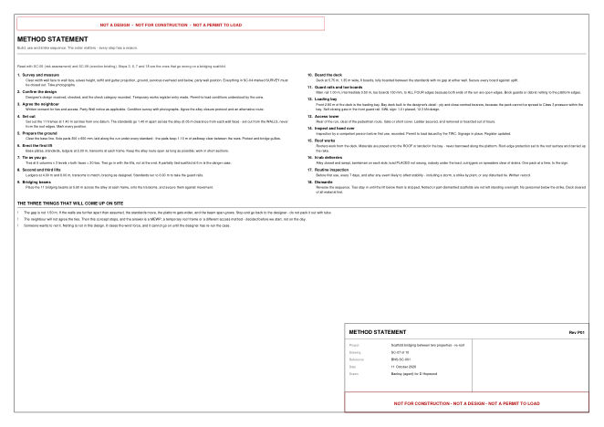
SC-07Method statementBuild, use and strike sequence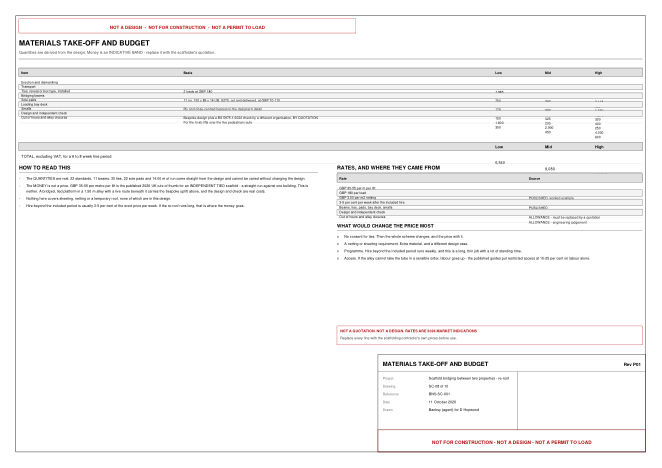
SC-08Take-off and budgetQuantities, rates sourced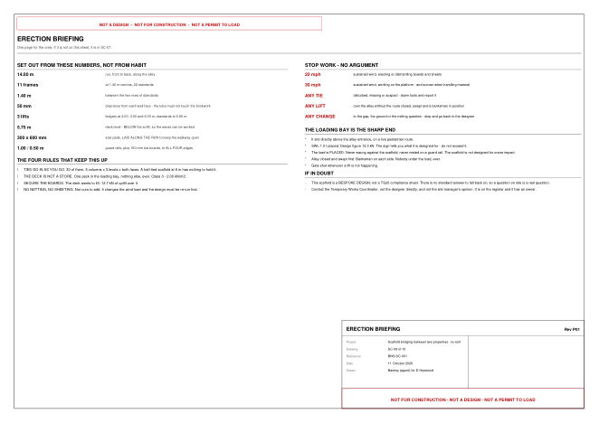
SC-09Erection briefingOne page for the crewThe model, not an impression of it.
Built from the same dimensions as the drawings. Walk the deck, look down the alley, or switch to frame only to see the tube frame on its own. It works on a phone.
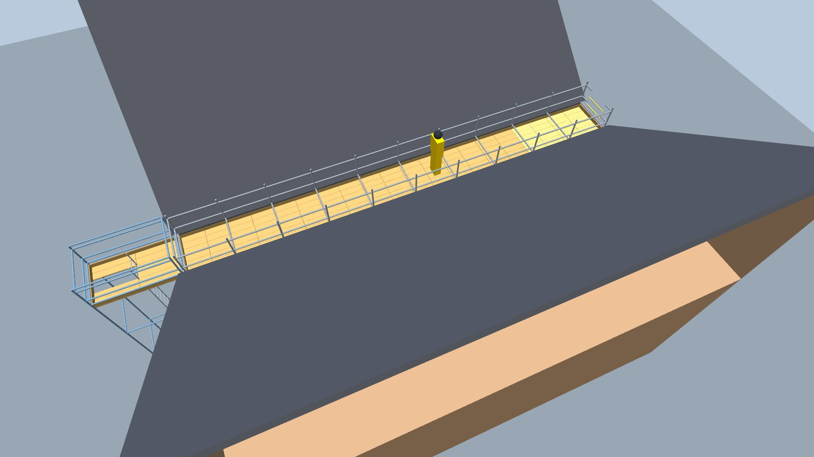
Before any tube moves
- The ties need written consent from next doorMost of the 30 ties go into the adjoining property, and the scaffold cannot stand without them. No consent, no concept, and the rethink happens before erection rather than on the morning.
- Measure the walls, not the roof edgesEverything here is set from an assumed 1.50 m between wall faces. The 1.80 m given is roof edge to roof edge, which is wider. If the walls are not 1.50 m apart, the bay spacing and the platform change.
- Measure the eaves and the soffitEaves height and the gutter projection, once the strip begins. They set the deck level and the roof edge protection.
- Settle the roof pitch with one rafterIt cannot be derived from the three dimensions given, so it is marked as estimated until somebody measures one.
- Confirm the ground and the servicesOverhead cabling and gully gratings are both visible in the photographs, and the ground under the legs is unproven.
Two things still open, and they matter
How the tile packs actually get onto the roofs. Straight to the roof by hi-ab, or landed in the bay and then up? It changes the lift plan and the figure on the sign.
The real weight of a delivered pack. The loading bay is designed and signed for 1.0 t placed, 12.3 kN design. Heavier packs change that number.
Not a TG20 compliance sheet
A platform bridging two structures sits outside every published configuration, so it is designed and independently checked to BS 5975-1:2024. The design belongs to the designer, and nothing is loaded until a permit to load is issued.
What this pack is not
- Not a design. No member size is signed off, and the bridging beam is named as a candidate pending the designer's own check.
- Not a permit to load, and it cannot be turned into one.
- Not a compliance sheet. No figure in it may be presented as one.
- Not a survey. Anything marked SURVEY or ASSUMED on SC-04 must be replaced with a measured value before the designer commits.